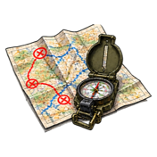
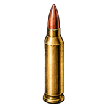
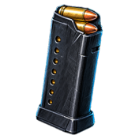
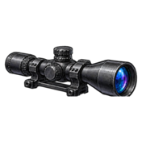
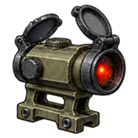
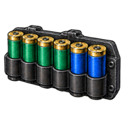
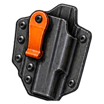
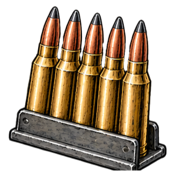
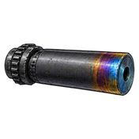
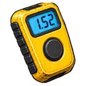

Tactics & Shooting Reference
Illustrated references with animated sand tables: small-unit recon and close quarters, incident studies, professional rifle, shotgun, handgun, and bolt-rifle marksmanship, defensive use of each, weapon modifications, and practice drills.
The four rules, every page, every time
- Treat every firearm as if it's loaded.
- Never point the muzzle at anything you aren't willing to destroy.
- Keep your finger off the trigger until your sights are on the target and you've decided to fire.
- Be sure of your target and what's beyond it.
Suggested order
- Start with a professional page for the platform: fundamentals first.
- Move to its defensive page: the same skills under time, stress, and legal limits.
- Then the CQB Primer for team movement, structures, and vehicles.
Every animation has play, pause, slow motion, and a scrub bar. Tabs above an animation switch between techniques.
01Tactics
Recon & CQB Primer
Reconnaissance, urban terrain, building recon, bounding between buildings, entry and room clearing, hallways, stairs, and vehicle route assessment, planning, avoidance, and engagements.

Scenario-Based Engagement Breakdowns
Fifteen incident studies: fighting withdrawals, convoy contacts, isolated and penetrated positions, personnel recovery, casualty movement, and what happens when the original plan stops matching the incident.
Cover and Concealment
What stops bullets and what only hides you: a material table for handgun and rifle rounds, standing off cover, skipping rounds, moving between cover, and cover indoors, around vehicles, and on open ground.
Ballistics Calculator
Drop, holds, wind drift, velocity, and energy for 33 cartridges: .22 LR to .300 Win Mag, 9mm to 5.7, .22 and 6mm ARC, 6.5 Grendel, Creedmoor and PRC, .30-30, .350 Legend, .360 Buckhammer, .450 Bushmaster, and 12 and 20 gauge shot, buckshot, and slugs.
02Professional shooting

Rifle
Shot process, positions, natural point of aim, trigger, zeroing and trajectory, MOA and mils, wind, group analysis.
Shotgun
Actions and gauges, shells, chokes and patterning, gun fit, mount and stance, lead methods, shot string, trap, skeet, and sporting clays.

Handgun
Grip, stance, sight alignment, trigger phases, error diagnosis, recoil, the draw, reloads, malfunctions, dry practice, competition.

Bolt Rifle
The action, cartridges, scope mounting and setup, bipod, bag, and sling positions, running the bolt, zeroing and data, wind at distance, maintenance.
03Defensive shooting

Defensive Rifle
Legal limits, setup, ready positions, mechanical offset, shooting from cover, movement, malfunctions and transitions, low light, home defense.

Defensive Shotgun
Setup, ammunition, buckshot patterns at room distance, pump manual of arms, keeping the gun fed, recoil control, moving indoors.

Defensive Handgun
Legal framework, awareness, carry gear, reactionary gap, concealed draw, cover and concealment, the sidearm with a long gun, multiple threats, aftermath.

Defensive Bolt Rifle
Where a bolt gun fits, setup and readiness, close range with a scope, running the bolt under stress, keeping it fed, identification at distance, low light.
04Equipment & practice

Common Weapon Modifications
Short barrels, suppressors, weapon lights, visible and infrared lasers: what each does on every platform, and the 2026 federal rule changes.

Common Practice Drills
The Mozambique, Dicken, Bill, FAST, El Presidente, Casino, 9-hole barricade, slug select, and more, with standards and a par timer.